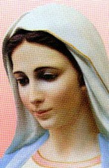

<html>

<head>
<meta charset="UTF-8">
<META name="mytopic" content="Society:Culture:Religion:Faiths 
and Beliefs: Christianity: Catholicism".>
<META NAME="Build"content="APOSTOLADO DOS SAGRADOS 
CORAÇÕES; Apostolado de los Sagrados Corazones; Apostolate of the 
Sacred Hearts; Apostolat des Sacre Coeurs">
<title>APOSTÓLICA E PERFEITA COMUNHÃO (Caridade Divina)</title>
</head>

</html> 
<body background="papelamassado1.jpg" link="#FF0000" vlink="#FF0000">

<p align="center">
<span style="font-size: 70pt; font-family: Algerian; color: red">"APOSTÓLICA E
</span></p>

<p align="center">
<span style="font-size: 70pt; font-family: Algerian; color: red">PERFEITA 
"COMUNHÃO"</span></p>

<p><font face="Arial" size="5"></font></p>


<p align="justify"><b><font face="Arial" size="6">A EUCARISTIA É APOSTÓLICA
</font></b></p>

<p align="justify"><font face="Arial" size="5">A Igreja foi e continua a ser 
construída sobre o alicerce dos Apóstolos. O mesmo acontece com a Sagrada 
Eucaristia, que foi confiada por CRISTO aos Apóstolos e chegou até nós através 
da sucessão ininterrupta do Ministério Apostólico.</font></p>

<p align="justify"><font face="Arial" size="5">Por outro lado, de conformidade 
com a doutrina dos Apóstolos, criada por JESUS, a Igreja se confirma na continua 
transmissão do deposito da fé, também recebido dos Apóstolos. Esta fé permanece 
imutável, e é essencial para a Igreja que assim permaneça.</font></p>


<p align="justify"><b><font face="Arial" size="6">MINISTÉRIO SACERDOTAL</font></b></p>

<p align="justify"><font face="Arial" size="5">O Sacerdote oferece o Sacrifício 
Eucarístico em virtude do Sacramento da Ordem, pelo qual, ele está configurado 
com CRISTO. Ele não ocupa o lugar de CRISTO no oferecimento da Sagrada 
Eucaristia, CRISTO é que age através dele. Em outras palavras, a Sagrada 
Eucaristia permanece sempre uma ação de CRISTO.</font></p>

<p align="justify"><font face="Arial" size="5">E justamente, a SAGRADA 
EUCARISTIA é a </font><b><font face="Arial" color="#0000FF" size="5">"Razão"
</font></b><font face="Arial" size="5"> para a existência do Sacramento da Ordem 
Sagrada. Na Última Ceia NOSSO SENHOR JESUS CRISTO instituiu a Sagrada Eucaristia e 
também consagrou os Apóstolos como </font><b><font face="Arial" color="#0000FF" size="5">
"Sacerdotes"</font></b><font face="Arial" size="5"> responsáveis para oferecê-la. 
Na continuidade, o Sacerdote é Ordenado para agir na Pessoa de CRISTO, Pastor e 
Cabeça do Rebanho do PAI ETERNO; age na Pessoa de CRISTO, sobretudo, quando LHE 
empresta as suas mãos e voz, para que o SENHOR Consagre o Pão e o Vinho, 
transformando-os no Seu Corpo e no Sangue, para nosso sustento espiritual.
</font></p>


<p align="justify"><b><font face="Arial" size="6">CENTRO DO MINISTÉRIO SACERDOTAL
</font></b></p>

<p align="justify"><font face="Arial" size="5">Assim sendo, a Sagrada 
Eucaristia é o coração e a mais alta expressão da Igreja. Portanto, é também, o 
centro e a raiz da vida de todo o Presbítero (Sacerdote), ou seja, é a própria 
razão da </font><b><font face="Arial" color="#0000FF" size="5">"existência do 
Ministério Sacerdotal"</font></b>,<font face="Arial" size="5"> instituído por 
JESUS na Última Ceia.</font></p>

<p align="justify"><font face="Arial" size="5">Por essa razão, por estar no 
coração do Ministério Sacerdotal, o Sacrifício Eucarístico explica também </font><b>
<font face="Arial" color="#0000FF" size="5">"o desejo da Igreja de que o Sacerdote 
celebre a Santa Missa diariamente"</font></b><font face="Arial" size="5">, mesmo que 
não tenha consigo uma Comunidade visível, já que a Santa Missa é sempre um </font>
</font><b><font face="Arial" color="#FF0000" size="5">"ato de CRISTO e da Igreja".
</font></b></p>


<p align="justify"><b><font face="Arial" font size="6">A EUCARISTIA É COMUNHÃO
</font></b></p>

<p align="justify"><font face="Arial" size="5">Não pode existir </font><b>
<font face="Arial" color="#0000FF" size="5">"Comunhão"</font></b><font face="Arial" 
size="5"> mais completa e perfeita com DEUS do que a Sagrada Eucaristia, na qual 
recebemos o Corpo de JESUS, DEUS FILHO, encarnado para a nossa Salvação. </font></p>


<p align="justify"><font face="Arial" size="6"><b>DIMENSÕES DA COMUNHÃO</font></b></p>

<p align="justify"><font face="Arial" size="5">O Papa afirma que a Comunhão 
Eucarística tem duas grandes dimensões: </font><b><font face="Arial" color="#009900" 
size="5">"Uma Visível e outra Invisível".</font></b></p>

<p align="justify"><font face="Arial" size="5">A </font><b><font face="Arial" 
color="#009900" size="5">"Dimensão Invisível"</font></b><font face="Arial" size="5"> 
é a vida da graça dentro de nós. É somente pela graça de DEUS que estamos em comunhão 
com ELE e com as pessoas. E pelo adorável relacionamento com ELE, DEUS nos dá as 
Virtudes da Fé, da Esperança e da Caridade. E é de nosso interesse e necessidade, 
cultivarmos as Virtudes recebidas do SENHOR, que com nossa virtude moral, auxiliada 
e orientada pelo ESPÍRITO SANTO, fará conduzir a nossa existência de tal forma, 
a nos assemelharmos a CRISTO.</font></p>

<p align="justify"><font face="Arial" size="5">Como cuidado e atenção naturais, 
a Comunhão exige que o fiel se examine criteriosamente, antes de se aproximar 
para receber a Sagrada Eucaristia durante a Santa Missa, e caso tenha a 
consciência de algum pecado cometido (leve ou grave), deve primeiro ir buscar a 
reconciliação com DEUS no Sacramento da Penitência. Só então, depois de 
devidamente penitenciado das suas culpas, estará em perfeitas condições para 
receber a Sagrada Comunhão. Isto porque o </font><b><font face="Arial" color="#0000FF" 
size="5">"Estado de Graça"</font></b><font face="Arial" size="5"> é indispensável 
para que uma pessoa receba dignamente o SANTÍSSIMO SACRAMENTO, que é o próprio DEUS 
da Vida. Este é o devido e necessário respeito que se deve ter com DEUS.</font></p>

<p align="justify"><font face="Arial" size="5">A </font><b><font face="Arial" 
color="#009900" size="5">"Dimensão Visível"</font></b><font face="Arial" size="5"> 
é aquela dimensão lógica e natural, pois significa estar de acordo e seguir as 
doutrinas da Igreja. O Direito e as Normas Eclesiásticas não permitem dar a Sagrada 
Comunhão a alguém que não concorda e não aceite a verdade da fé acerca da Sagrada 
Eucaristia. Também não podem receber a Comunhão Eucarística aqueles que ainda não 
foram Batizados. Por outro lado, a Sagrada Comunhão é também comunhão com o próprio 
Bispo local, o chefe da Diocese, e com o Pontífice Romano. O Bispo é o </font><b>
<font face="Arial" color="#009900" size="5">"princípio visível"</font></b><font 
face="Arial" size="5">e o fundamento da unidade na sua Igreja, e na sua Diocese. 
E por isso também, nas suas orações, os fieis devem lembrar do Bispo Diocesano 
e do Papa.</font></p>


<p align="justify"><font face="Arial" size="6"><b>DIGNIDADE DA CELEBRAÇÃO </font>
</b></p>

<p align="justify"><font face="Arial" size="5">A Sagrada Eucaristia (a Santa 
Missa) deve ser celebrada com a maior dignidade. Os fundamentos dos seus ritos 
litúrgicos estão no relato da Última Ceia, conforme se apresenta nos Evangelhos 
e na primeira Carta de São Paulo aos Coríntios. A Última Ceia de NOSSO SENHOR 
foi, ao mesmo tempo, simples e solene. CRISTO ordenou aos Doze que renovassem a 
Sua Última Ceia em cada Comunidade de fiéis, até o dia da Sua </font><b>
<font face="Arial" color="#0000FF" size="5">"Segunda Vinda" </font><font face="Arial" 
size="5">(no Final dos Tempos): </font><b><font face="Arial" color="#FF0000" size="5">
"Fazei isto em memória de MIM".</font></b><font face="Arial" size="5"></b> O Papa João 
Paulo II recorda a ordem dada por JESUS aos Discípulos, de prepararem a sala do 
andar de cima para a Última Ceia. Isto reflete no cuidado especial que a Igreja 
põe na celebração da Sagrada Eucaristia, a qual revela a fé naquilo que ela 
verdadeiramente </font><b><font face="Arial" color="#0000FF" size="5">"vai realizar"
</font></b>,<font face="Arial" size="5"> ou seja, reflete uma profunda reverência 
a NOSSO SENHOR, nosso DEUS e SALVADOR, que ao longo da Cerimônia reviverá o 
Sacrifício do Gólgota.</font></p>


<p align="justify"><font face="Arial" size="6"><b>SAGRADO BANQUETE</font></b></p>

<p align="justify"><font face="Arial" size="5">Em algumas ocasiões a EUCARISTIA 
também é referida como um </font><b><font face="Arial" color="#0000FF" size="5">"Banquete"
</font></b><font face="Arial" size="5"> no qual JESUS nos alimenta espiritualmente com o 
Seu verdadeiro Corpo e Sangue. Mas não se trata de um mero banquete como tantos outros, 
ou uma refeição comum, é um </font><b><font face="Arial" color="#0000FF" size="5">"Banquete 
Sagrado Muito Especial e Santo Sacrifício",</font></b><font face="Arial" size="5"> no qual 
participamos do Amor e da Santidade do próprio DEUS, que é ao mesmo tempo, o </font><b>
<font face="Arial" color="#0000FF" size="5">"Sacerdote"</font></b><font face="Arial" size="5"> 
e a </font><b><font face="Arial" color="#0000FF" size="5">"Vítima"</font></b><font face="Arial" 
size="5"> da Santa Missa. É por isto que as Igrejas Católicas não são construídas como se 
fossem salões de conferência ou salas de banquetes, e sim, templos para o exercício da religião. 
Do mesmo modo, é por isto também que as pessoas devem ter um cuidado todo atencioso ao se 
vestir para participar das cerimônias, assim como ter um comportamento respeitoso e digno, 
durante o </font><b><font face="Arial" color="#0000FF" size="5">"Sacrifício e Banquete 
Eucarístico".</font></b></p>


<p align="justify"><font face="Arial" size="6"><b>EUCARISTIA MISTÉRIO DE FÉ</font></b></p>

<p align="justify"><font face="Arial" size="5">É um caminho impossível de se 
imaginar, que os cristãos possam se aproximar da Sagrada Eucaristia com a 
necessária fé e um profundo e sincero amor, buscando viver o imenso Mistério 
Eucarístico sem o auxílio da SANTÍSSIMA VIRGEM MARIA, </font><b><font face="Arial"
color="#0000FF" size="5">"que foi o primeiro Sacrário da história"</font></b>,
<font face="Arial" size="5"> e que por sua admirável existência dedicada ao Seu 
Divino FILHO JESUS, tornou-se</font><b><font face="Arial" color="#0000FF" size="5">
"a mulher eucarística".</font></b></p>

<p align="justify"><font face="Arial" size="5">Então, sendo a Sagrada 
Eucaristia um Mistério de Fé que excede tanto a nossa inteligência e nos obriga 
ao mais puro abandono à palavra de DEUS, ninguém melhor do que MARIA, NOSSA 
SENHORA para nos servir e conceder o seu auxílio de guia nesta atitude de 
abandono.</font></p>

<p align="justify"><font face="Arial" size="5">Estas realidades nos convidam e 
despertam a nossa admiração pela Sagrada Eucaristia, como uma atitude que deve 
ser plenamente natural a todo cristão, conforme as recomendações contidas no 
texto da </font><b><font face="Arial" color="#0000FF" size="5">"Nova Evangelização"
</font></b>,<font face="Arial" size="5"> a qual, todos nós somos chamados a acolher, 
desde o alvorecer deste segundo milênio cristão. O Papa João Paulo II deixa claro 
que o programa da Nova Evangelização é o próprio CRISTO, e nos ensina a contemplar 
a Face do SENHOR JESUS, a reconhecer a Sua presença junto de nós na Igreja, 
e acima de tudo, no Sacramento do Seu Corpo e Sangue, para que nós nos 
assemelhemos a ELE cada vez mais na vida corrente.</font></p>


<p align="justify"><font face="Arial" size="6"><b>NA ESCOLA DE MARIA</font></b></p>

<p align="justify"><font face="Arial" size="5">Na Carta Encíclica </font><b>
<font face="Arial" color="#009900" size="5">"Ecclesia de Eucharistia"</font></b>, 
<font face="Arial" size="5">o Papa João Paulo II nos lembra que para perscrutar 
todos os Mistérios da Sagrada Eucaristia e a sua relação com a Igreja, devemos 
olhar para MARIA, NOSSA SENHORA, MÃE e modelo da Igreja. Porque Nossa MÃE SANTÍSSIMA 
é a primeira e melhor Mestra para a nossa contemplação da FACE DE CRISTO, e assim, 
a melhor e mais apta a nos conduzir a SAGRADA EUCARISTIA. De duas maneiras ela 
nos conduz a SANTÍSSIMA EUCARISTIA: Primeiro porque Ela Mesma viveu como os 
cristãos, após a Ressurreição de JESUS, frequentando a Comunidade Cristã na 
companhia dos Apóstolos, dando o Seu exemplo de fidelidade, rezando 
e recebendo a Comunhão Eucarística, como todos os fieis; segundo porque Nela 
estava toda a história do Seu Divino FILHO. Então era comum, os próprios Apóstolos 
pedir a MARIA que Ela lhes contasse passagens ocorridas na vida de JESUS. Eram 
lições maravilhosas de saudades e de imensa ternura, que envolvia o coração e os 
sentimentos de todos, arrancando expressões e exclamações repletas de amor, 
enquanto dos lindos olhos da SANTA MÃE MARIA, uma saudosa e furtiva lágrima 
descia ligeira pela Sua Face emocionada, e caia ao chão. Assim, podemos 
afirmar que MARIA, NOSSA SENHORA, que foi uma Seguidora fiel e MÃE de JESUS, é uma
</font><b><font face="Arial" color="#0000FF" size="5">"Mulher Eucarística"</font></b>, 
<font face="Arial" size="5">e por isso mesmo,</font><b><font face="Arial" color="#0000FF" 
size="5">"Modelo da Igreja"</font></b>, <font face="Arial" size="5">sempre nos convidando 
a imitá-la também na sua relação com este </font><b><font face="Arial" color="#0000FF" 
size="5">"Mistério SANTÍSSIMO".</font></b></p>


<p align="justify"><font face="Arial" size="6"><b>DISPOSIÇÃO DE FÉ</font></b></p>

<p align="justify"><font face="Arial" size="5">A SAGRADA EUCARISTIA é um 
Mistério de Fé que vai muito além da nossa capacidade de entendimento, exigindo 
de nós que creiamos na Palavra de JESUS. Para realçar esta verdade, MARIA, a MÃE 
SANTÍSSIMA DO SENHOR, em todas as oportunidades, expressava um especial cuidado 
maternal por cada um de nós, orientando-nos que fossemos a CRISTO e NELE, 
depositássemos a nossa fé. Nas Bodas de Cana ELA disse: </font><b><font face="Arial" 
color="#FF0000" size="5">"Fazei o que ELE vos disser"</font></b><font face="Arial" 
size="5"> (Jo 2,5). Também vemos a disposição de Fé de MARIA na resposta ao Arcanjo 
Gabriel no momento da Anunciação: </font><b><font face="Arial" color="#FF0000" size="5">
"Faça-se em Mim segundo a tua palavra" </font></b><font face="Arial" size="5">(Lc 1, 38). 
Também no momento da Encarnação, MARIA expressou desde logo a fé da Igreja na Sagrada 
Eucaristia! E toda esta verdade permitiu que o Papa João Paulo II proclamasse: </font>
<b><font face="Arial" color="#009900" size="5">"Ela serviu de Sacrário o primeiro 
Sacrário da história, para o FILHO DE DEUS, que ainda invisível aos olhos dos homens, 
SE prestava à adoração de Isabel, como que irradiando a Sua Luz Divina através dos 
olhos e da voz da Sua Querida MÃE MARIA".</font></b></p>


<p align="justify"><font face="Arial" size="6"><b>SACRIFÍCIO</font></b></p>

<p align="justify"><font face="Arial" size="5">Como nós nos unimos mais 
perfeitamente a CRISTO através da Sagrada Eucaristia, MARIA, desde o momento da 
Encarnação do VERBO, empregou toda a sua vida em cuidados, carinhos e atenção ao 
Seu DIVINO FILHO. No dia da Apresentação de JESUS no Templo, em Jerusalém, 
Simeão já havia indicado a natureza dos Seus sacrifícios ao sentenciar: </font><b>
<font face="Arial" color="#FF0000" size="5">"Uma espada traspassará Tua alma"</font>
</b><font face="Arial" size="5"> (Lc 2,34-35); sofrimentos que aumentaram de maneira 
cruel e cresceram com a Flagelação do Seu FILHO JESUS, alcançando a plenitude aos 
pés da Cruz, quando ELE morreu Crucificado.</font></p>

<p align="justify"><font face="Arial" size="5">A participação de MARIA após a 
Morte e Ressurreição de JESUS, continuou com sua presença permanente e dedicada 
em todas as celebrações Eucarísticas. Aquele Corpo do Seu FILHO entregue em 
Sacrifício, agora estava presente nas espécies sacramentais. Então o Papa João 
Paulo II pergunta: </font><b><font face="Arial" color="#009900" size="5">"Quem, 
pois, melhor do que MARIA poderá nos ensinar como havemos de nos unirmos ao 
Sacrifício de CRISTO na SAGRADA EUCARISTIA?"</font></b></p>

<p align="justify"><font face="Arial" size="5">ELA nos leva a unir os nossos 
corações, como ELA uniu o SEU IMACULADO CORAÇÃO ao SAGRADO CORAÇÃO DE JESUS, que 
se derramou em perfeito Amor por DEUS e por todos nós.</font></p>


<p align="justify"><font face="Arial" size="6"><b>MEMORIAL</font></b></p>

<p align="justify"><font face="Arial" size="5">Tudo aquilo que CRISTO fez por 
nós no Calvário, está presente na Santa Missa. Este é o sentido destas palavras 
de JESUS: </font><b><font face="Arial" color="#FF0000" size="5">"Fazei isto em 
MINHA memória"</font></b><font face="Arial" size="5"> (Lc 22, 19). Isto significa 
dizer, que como aconteceu no Calvário, em cada Eucaristia JESUS nos dá MARIA, Sua 
MÃE, para ser a nossa MÃE, e dá MARIA a todos nós, como filhos e filhas verdadeiros 
DELA, do mesmo modo como ELE fez quando morreu na Cruz por nós. Como acrescenta o 
Papa João Paulo II: </font><b><font face="Arial" color="#009900" size="5">"Isto 
implica num compromisso da nossa parte: de sermos alunos fiéis da Escola de MARIA, 
para permitirmos que ELA exercite plenamente em nós o seu cuidado maternal, a fim 
de nos assemelhar cada vez mais a JESUS, o Seu Querido e Amado FILHO".
</font></b></p>

<p align="justify"><font face="Arial" size="5">A Igreja jamais celebra uma 
Santa Missa sem que se faça memória da nossa Santa MÃE, que está presente em 
nosso coração e em nossa mente, e que sempre quer nos conduzir a CRISTO, 
instruindo-nos, para que sejamos obedientes ao que ELE nos disser.
</font></p>


<p align="justify"><font face="Arial" size="6"><b>NO EVANGELHO DE SÃO JOÃO</font></b></p>

<p align="justify"><font face="Arial" size="5">JESUS disse sobre a Eucaristia 
(Pão Vivo de DEUS):</font></p>

<p align="justify"><font face="Arial" color= "#FF0000"size="5"><b>"Em verdade, em 
verdade vos digo: Não foi Moisés quem vos deu o pão do Céu, mas é MEU PAI quem 
vos dá o verdadeiro pão do Céu, porque o pão de DEUS é o pão que desce do Céu e 
dá vida ao mundo".</font></b><font face="Arial" size="5"> 
(Jo 6, 32-33)</font></p>

<p align="justify"><font face="Arial" color="#FF0000" size="5"><b>"EU sou o pão vivo 
descido do Céu. Quem comer deste pão viverá eternamente. O pão que EU darei é a 
MINHA Carne para a vida do mundo".</font></b><font face="Arial" size="5"> 
(Jo 6,51)</font></p>


<p align="justify"><font face="Arial" size="6"><b>SAGRADA EUCARISTIA, DOM DO PAI
</font></b></p>

<p align="justify"><font face="Arial" size="5">Assim, receber a Sagrada 
Eucaristia é tomar parte na Vida do DEUS TRINO. É um dom que somente é dado por 
DEUS PAI, DEUS FILHO e DEUS ESPÍRITO SANTO. DEUS PAI o dá através da Morte e 
Ressurreição do Seu FILHO JESUS (DEUS FILHO); a TERCEIRA PESSOA DA SANTÍSSIMA 
TRINDADE nos dá, pela Efusão do ESPÍRITO SANTO (DEUS ESPÍRITO SANTO), um dom de 
puro e desinteressado Amor, dado com plena e total liberdade.</font></p>

<p align="justify"><font face="Arial" size="5">Assim, verdadeiramente na 
Sagrada Eucaristia, o DEUS TRINO, </font><b><font face="Arial" color="#FF0000" 
size="5">"porque DEUS é AMOR"</font></b><font face="Arial" size="5"> (1 Jo 4, 8), 
SE envolve plenamente com a nossa condição humana. Isto nos leva a compreender que 
partilhando da vida da SANTÍSSIMA TRINDADE, nós, em nossa frágil condição, partilhamos 
também da Comunhão de Amor das Três Pessoas Divinas em </font><b><font face="Arial" 
color="#FF0000" size="5">"UM SÓ DEUS".</font></b></p>

<p align="justify"><font face="Arial" size="5">O que NOSSO SENHOR realizou na 
Cruz, </font><b><font face="Arial" color="#0000FF" size="5">"o cumprimento da promessa 
Divina de Salvação da humanidade"</font></b><font face="Arial" size="5">, é continuamente 
renovado para toda humanidade através da SAGRADA EUCARISTIA (das Santas Missas celebradas 
diariamente em todos os lugares).</font></p>

<p align="justify"><font face="Arial" size="5">No Sacrifício Eucarístico, antes 
das palavras da Consagração, mediante as quais NOSSO SENHOR transforma as 
espécies do pão e do vinho no Seu verdadeiro Corpo, Sangue, Alma e Divindade, o 
Sacerdote suplica ao DIVINO ESPÍRITO SANTO que desça sobre as ofertas do pão e 
do vinho, para que DEUS PAI possa transformá-las no Corpo e no Sangue de CRISTO, 
Seu FILHO e NOSSO SENHOR. O mesmo ESPÍRITO SANTO faz com que os muitos membros 
do Corpo de CRISTO (os homens e as mulheres que o amam) sejam </font><b>
<font face="Arial" color="#0000FF" size="5">"um só"</font></b>, <font face="Arial" 
size="5">unindo-os no oferecimento das suas vidas, com CRISTO, para o bem dos seus 
irmãos e irmãs, através da Comunhão Eucarística.</font></p>

<p align="justify"><font face="Arial" size="5">A grandeza e o valor admirável 
da Sagrada Eucaristia está bem manifestado nas palavras do grande teólogo Santo 
Agostinho de Hipona, num sermão no Domingo da Páscoa no ano 414 ou 415:
</font></p>

<p align="justify"><font face="Arial" color="#FF6600" size="5"><b>"O Pão que vedes 
sobre o Altar, santificado com a palavra de DEUS, é o CORPO de CRISTO. O Cálice, 
ou melhor, aquilo que o Cálice contém, santificado com as palavras de DEUS, é o 
SANGUE de CRISTO. Com estes <i>"sinais"</i>, CRISTO SENHOR quis nos confiar o 
SEU CORPO e o SEU SANGUE, que derramou por nós para a remissão dos pecados. Se 
os recebestes bem, vós mesmos sereis AQUELE que recebestes".</font></b></p>


<p align="justify"><font face="Arial" size="6"><b>SAGRADA EUCARISTIA E VIDA 
CORRENTE</font></b></p>

<p align="justify"><font face="Arial" size="5">Considerando a realidade que a 
SAGRADA EUCARISTIA é um imenso mistério a ser vivido por toda humanidade, 
nossa cultura atual, totalmente secularizada, de certo modo exclui a fé cristã da vida 
corrente. Mas acontece que, pela sua própria natureza, a SAGRADA EUCARISTIA 
anima e estimula todos os aspectos da existência cristã. Através do Sacramento 
da SAGRADA EUCARISTIA, NOSSO SENHOR SE faz presente no meio de nós, para nos 
trazer a vida do ESPÍRITO SANTO, que inspira dando idéias, santifica, estimula o 
trabalho e transforma os corações no caminho do direito, da justiça e do amor 
fraterno. Por isso mesmo, na EUCARISTIA, quem quer que receba o Corpo de CRISTO 
com fé, pensa com CRISTO, e age como CRISTO agiria. Este é o fato real que 
acontece com as pessoas que manifestam a sua fé. Esta verdade nos faz perceber o 
desejo da Igreja, de ansiar em ver os leigos cultivar a SAGRADA EUCARISTIA com 
mais frequência, no sentido de que ela venha influenciar, cada vez mais 
profundamente na existência cotidiana das pessoas, levando-as a serem 
testemunhas reconhecidas como tais no próprio ambiente de trabalho e na 
sociedade onde vivem.</font></p>

<p align="justify"><font face="Arial" size="5">O conhecimento e o amor 
dedicados ao Mistério Eucarístico são também especialmente importantes para a 
vocação dos casados e para a vida familiar. Pela participação na SANTA MISSA e 
nas devoções Eucarísticas, marido e mulher chegam também à compreensão na 
necessária busca da proteção ao amor recíproco necessário ao bem-estar da 
família e bem viver. O Amor de JESUS, oferecido na Sagrada Eucaristia, é o Seu 
próprio Amor, eternamente fiel e aberto a todas as vidas humanas. Inclusive nas 
relações entre pais e filhos, onde o entendimento, o respeito e a atenção, 
também encontram o seu modelo ideal no Amor de CRISTO, o mais puro e o mais 
desinteressado de todos os amores.</font></p>

<p align="justify"><font face="Arial" size="5">Todos nós temos uma viva 
experiência do imenso </font><b><font face="Arial" color="#0000FF" size="5">
"desafio"</font></b>, <font face="Arial" size="5"> que é viver uma vida à semelhança 
de CRISTO, num mundo totalmente secularizado. Isto requer uma dedicação permanente, 
para superar as muitas tentações que querem nos escravizar, que querem nos fazer 
viver </font><b><font face="Arial" color="#0000FF" size="5">"como se DEUS não existisse".
</font></b><font face="Arial" size="5"> A Sagrada Eucaristia é a fonte de energia para 
uma existência em liberdade, para se amar verdadeiramente como CRISTO ama. A Comunhão 
Eucarística infunde um corajoso amor dinâmico no coração de todos que acolhem 
honestamente, com o devido respeito e atenção o Dom do SENHOR, e se abandona 
confiantemente a ELE.</font></p>

<p align="justify"><font face="Arial" size="5">Entretanto é importante 
mantermos presente que a Sagrada Eucaristia exige de nós um testemunho da 
verdade e do amor que JESUS nos ensina. A responsabilidade de dar um testemunho 
público da nossa fé, sem ranço, sem fingimentos e sem dupla personalidade, é 
imperioso e especialmente grave, independentemente se somos pessoas do povo, 
administradores, profissionais liberais, políticos, militares ou se ocupamos um 
eminente posto ou cargo na Republica do país. O amor dedicado a DEUS deve ser 
puro, sincero e permanente. Jamais receber a Sagrada Comunhão, quem não estiver 
devidamente preparado espiritualmente, em pleno e fiel </font><b><font face="Arial"
color="#0000FF" size="5">"estado de graça"</font></b><font face="Arial" size="5">, 
arrependido e perdoado sacramentalmente, de todas as transgressões cometidas.
</font></p>

<p align="justify"><font face="Arial" size="5">Com este pensamento e decisão, 
com certeza a SAGRADA EUCARISTIA recebida, será o elo de santificação da vida do 
cristão consciente, que propiciará nele ou nela, um concreto bem-estar aqui e 
uma profunda e inigualável alegria na conquista da eternidade feliz.</font></p>


<p align="center"></p>

<p align="center"><font size="5" face="Arial Black" color="#FF0000">
<a href="corpisti.html">
PRÓXIMA PÁGINA</a></font></p>

<p align="center"><font size="5" face="Arial Black" color="#FF0000">
<a href="eucardi.html">
PÁGINA ANTERIOR</a></font></p>

<p align="center"><font size="5" face="Arial Black" color="#FF0000">
<a href="index136.html">
RETORNA AO ÍNDICE</a></font></p>

<p align="center"></p>


</html>